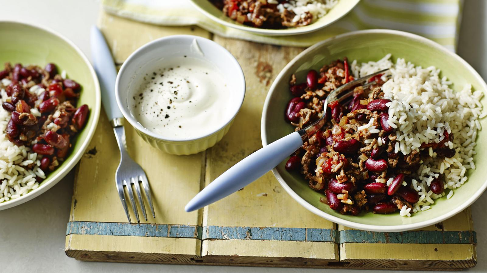

Home
Chilli Con Carne

Description
A cheap and cheerful chilli con carne recipe that's not just a student staple, it's great for families, too. This is designed to be a low cost recipe.
This chilli can be made in advance and frozen, just leave to cool completely and pop in a freezer-proof container. It will keep in the freezer for up to 2 months.
Ingredients
- 1 tbsp olive oil
- 1 onion, diced
- 2 garlic cloves, chopped
- 250g/9oz beef mince
- ½ -1 tsp chilli flakes, to taste
- 400g tin chopped tomatoes
- 500ml/18fl oz stock, made from a stock cube (ideally beef, but chicken is fine)
- ½ tsp dried mixed herbs
- 2 x 400g tins red kidney beans, drained and rinsed
- 200g/7oz long grain rice
- 200g/7oz natural yoghurt
- salt and pepper
- Heat a large saucepan over a medium heat. Add the olive oil and, once hot, fry the onion with a pinch of salt for 5 minutes, or until soft and translucent. Once soft, add the garlic and cook for 2 minutes.
- Add the mince, along with a good pinch of salt and pepper. Mix well and cook for 5-6 minutes, or until there are no raw bits of meat. Add the chilli flakes, tomatoes, stock and dried mixed herbs. Stir to mix well and bring to a simmer.
- Pour in the drained kidney beans and simmer gently for 30 minutes, or until the chilli con carne is thickened and rich. Taste and adjust the seasoning as necessary.
- Meanwhile, cook the rice according to the packet instructions.
- Serve the chilli con carne on top of the rice with a spoonful or two of yoghurt on top of each portion.